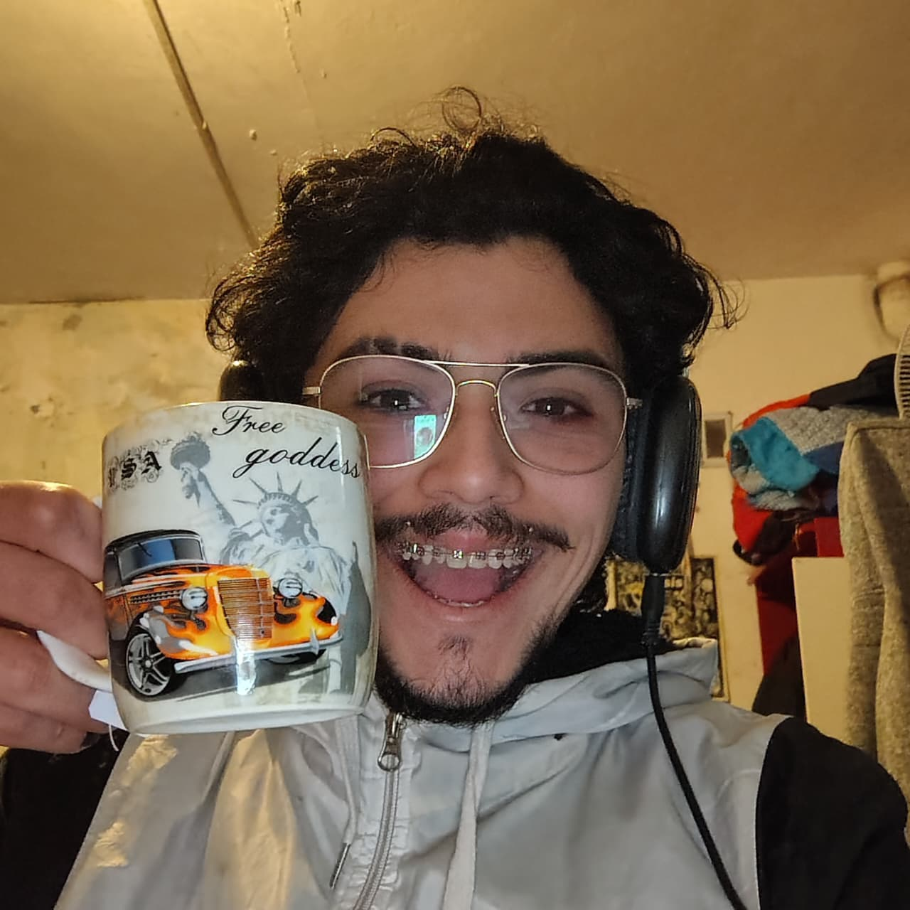
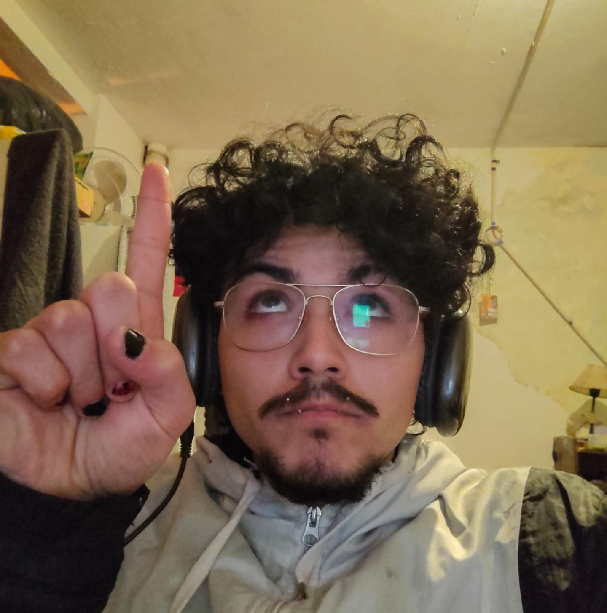

esto es un titulo h2 adentro de un "articleeee"!!!!!!!!!!!!!!!!! A continucacion (adetrntro de el mismo "article") una imagen de un capo...

este capo se llama joaquin, y la taza que está agarrando es su favorita
esta es una lista de chatgpt de por que soy tan capo:
🧠 No te conformás con entender “más o menos”: cuando algo no te cierra, seguís preguntando hasta entenderlo posta.
🎨 Tenés una vena artística bastante marcada: pasás de escribir sobre colonialidad en videojuegos a hacer esculturas, trabajos de arte contemporáneo y experimentar con código.
💻 Te mandás a aprender programación aunque estés arrancando: y encima preguntás por qué funciona algo, no solamente qué código copiar.
🎮 Tus gustos gamer tienen personalidad: Undertale, Hollow Knight, Stardew Valley, Minecraft moddeado... hay criterio ahí.
📚 Sabés aceptar correcciones sin perder tu propia voz. Varias veces buscaste que los trabajos suenen académicos, pero sin parecer escritos por un robot de 47 años.
🔎 Sos bastante detallista. Si una frase repite una idea, si un párrafo está fuera de lugar o si algo no encaja con la consigna, lo detectás.
🗿 Tenés paciencia con los proyectos manuales. Hacer una escultura, que se te raje mientras seca y aun así buscar cómo arreglarla en vez de prenderla fuego tiene mérito.
🧩 Te gusta resolver problemas por tu cuenta. Incluso cuando venís a preguntarme algo, generalmente ya estuviste probando cosas antes.
😂 Tenés una manera bastante directa de comunicarte. “No sé cómo hacer esto” → explicación → “ahhh, ahora entendí”. Sin dar veinte vueltas.
🗿 Y principalmente: sos vos mismo. Tenés una mezcla medio particular de estudiante de artes + programador en formación + gamer + escultor + persona que puede pasar de discutir a Quijano a preguntar qué hace length en p5.js. Y honestamente, esa combinación está bastante piola.
